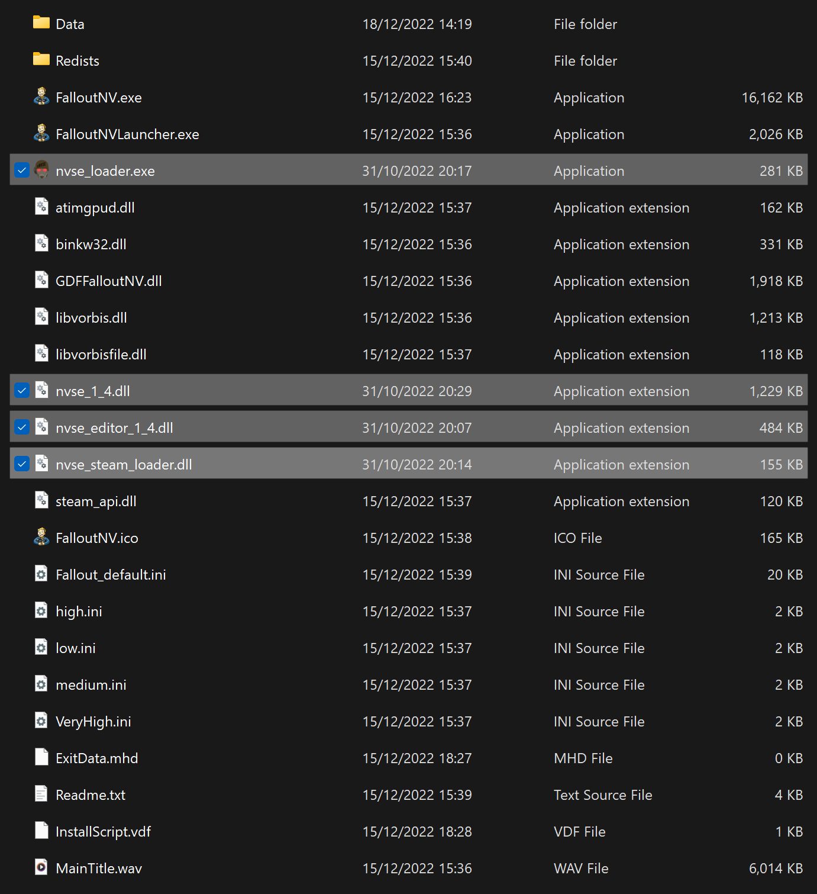

Utilities
Make sure the Blue Moon profile is active before proceeding.
xNVSE
Installation instructions:
- Main File - New Vegas Script Extender (NVSE) (Manual Download).
- From the downloaded archive, extract everything to the game's Root folder.
If you do not know what the Root folder is, read the Key Terminology section from the Setup page.
Despite its name, nvse_steam_loader.dll is still needed with the GOG version of the game.
An updated version of the original NVSE, which extends the scripting capabilities of the game.
After proper install, your Root Folder should look like this:

BSA Decompressor
Installation instructions:
- Download the Main Files - FNV BSA Decompressor and extract the contents of the archive anywhere outside of the default Windows folders.
- From the extracted archive, run FNV BSA Decompressor.exe.
- The Fallout: New Vegas and Decompressed Archives paths should be filled by default (root folder and data folder respectively). If they aren't, close the program and re-run your game launcher to generate the required registry key.
- Click Decompress, wait for the process the finish, then exit the program once finished.
Decompresses BSA files to reduce loading times and stuttering. Can also fix certain sound effects not playing.
Ultimate Edition ESM Fixes
Installation instructions
- Download the Main Files - Ultimate Edition ESM Fixes and extract the contents of the archive anywhere outside of the default Windows folders.
- Click the
 button next to the profiles bar and select Open Mods folder.
button next to the profiles bar and select Open Mods folder.
- Create an empty folder called Fixed ESMs inside of the Mods folder.
- From the extracted archive, run Installer.exe.
- The Fallout: New Vegas path should be filled by default (root folder). If it isn't, close the program and re-run your game launcher to generate the required registry key.
- Click Browse next to the ESM Fixes path field, then choose the Fixed ESMs folder you just created.
- Click Install, wait for the process the finish, then exit the program once finished.
- In Mod Organizer 2, press F5 to refresh the left pane and enable the Fixed ESMs mod by ticking its checkbox.
Optimizes and fixes thousands of records across the base game and DLC plugins to increase performance and stability.
4GB Patcher
This is required for both Steam & GOG users! The 4GB Patch included with the GOG release is obsolete as it lacks NVSE integration.
Installation instructions:
- Download the Main Files - 4GB Patcher.
- From the downloaded archive, extract the .exe file to the game's Root folder.
- Right-click on FNVpatch.exe and select Run as administrator.
- A command prompt window will open and should say FalloutNV.exe patched!
- Close the command prompt and a file named FalloutNV_backup.exe should appear in the game's Root folder.
Makes the game large address aware, meaning it can use 4GB of RAM instead of 2GB.
From now on, you should run the game through the New Vegas option in MO2, rather than the NVSE option. This mod makes the game auto-load NVSE when you run the game through the default executable, which is generally the safer option.